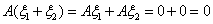
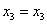
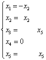
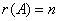

4.1 齐次线性方程组
一、齐次线性方程组的解
它有以下性质： 性质1：若都是方程组 因为。 性质2：若 因为 性质1与2说明：非空解向量集合V对于向量的加法与数乘运算封闭，因此V是n维列向量空间 |
由定义可知： 对于给定的n元齐次线性方程组 |
注：（1）解空间的维数，就是方程组 （2）当 |
|
例1：设 一定也是 证：由已知方程组 因为 显然可见矩阵是可逆矩阵，所以，说明 |
二、齐次线性方程组的基础解系及通解的求法
|
|
通解的求法： 只要把一般解改写为列向量的形式， 见下例： 例2：求的通解 解：写出方程组的系数矩阵，再用初等行变换化成简化阶梯形矩阵。 则方程组的一般解为 这里为自由未知量，我们今后以，表示自由未知量，则一般解可以写成 把等式右端自由未知量对齐，再写成向量的线性组合形式，则一般解为： 因为自由未知量，取，得到 则方程组的通解为为任意实数。 而就是方程组的一个基础解系。 |
|
例3：求的通解 解： 按上例的写法，得方程组一般解为或 从而方程组的通解为为任意实数。 这里为方程组的一个基础解系。 |
|
例4：设有矩阵A和矩阵B满足 证：将B按列分块，得，则由AB=0得，从而 当，齐次线性方程组 当时， |
请认真答题，测试一下你对前面知识点的学习情况！
(单选题) 17．设A为m×n矩阵，齐次线性方程组Ax=0有非零解的充分必要条件是（ ）
【答案】A
【解析】齐次线性方程组Ax=0有非零解的充分必要条件是系数矩阵A的秩小于n, 而A的秩小于n的充分必要条件是A的列向量组线性相关,故选A.
【知识点】齐次线性方程组的解
请认真答题，测试一下你对前面知识点的学习情况！
(单选题) 18．方程组的基础解系为（ ）。
【答案】B
【解析】
【知识点】齐次线性方程组的基础解系的求法